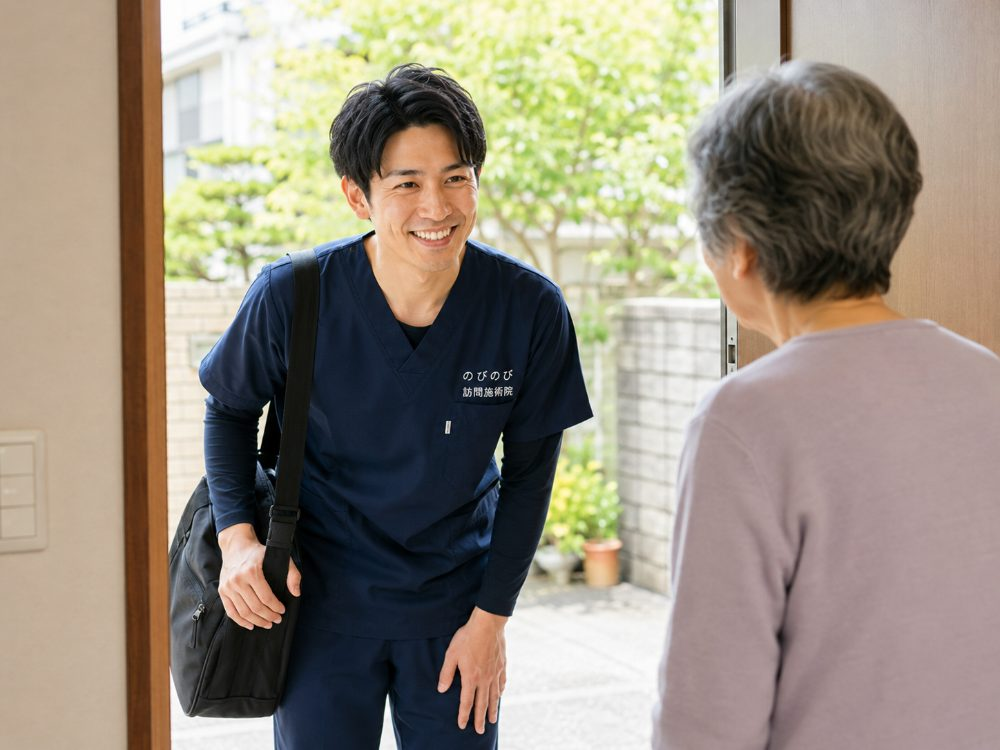

訪問鍼灸マッサージの当日にご家庭で必要な準備は、横になれる場所、楽な服装、飲んでいるお薬の情報の三つくらいで、鍼やお灸などの道具は国家資格をもつ施術者がすべて持参し、費用は医療保険で1回3,950円・1割の方で約395円が目安です。ご家族の立ち会いは必須ではありませんが、はじめのうちはお薬やこれまでの病気を伝えていただけると安心です。国家資格者が自宅に伺い、医師の同意にもとづく医療保険でケアを行います。 対応エリアは大阪府北部・大阪市の一部と尼崎市・伊丹市です。ご自宅へうかがい、はり・きゅう・マッサージの施術を行います。訪問で施術を受けると決まったものの、当日は何を用意すればいいのか、家族が立ち会う必要はあるのか、部屋はどうしておけばいいのか。はじめてだと、こまかなことが気になるものです。のびのび訪問施術院では、病院や施術所へ通いにくい方のお宅で、はりやお灸によるケアにあたっています。施術当日をどう迎えればよいか、準備・服装・立ち会い・当日の流れを、順を追って分かりやすくお伝えします。身がまえなくても大丈夫、というところから読んでいただければと思います。
結論から先に。特別な準備はほとんど要りません。横になれるスペースがあれば施術できます。
当日までに、何を用意すればいい？
まずお伝えしたいのは、施術のために特別な準備はほとんどいらない、ということです。施術に使う鍼やお灸、タオルなどの道具は、施術者がすべて持参します。ご家庭で何かを買いそろえたり、事前に用意しておいたりする必要はありません。
ふだんどおりの暮らしのなかに、施術者が伺うというイメージで大丈夫です。気負わず迎えていただけるよう、こちらで整えてまいります。
横になれる場所と、少しのスペースがあれば十分
施術は、ふだん使っている布団やベッドの上で受けられます。そのために新しく寝具を用意する必要はありません。横になるのがむずかしい方は、椅子に座ったままでも受けられますので、その方が楽な姿勢に合わせて進めます。
体を動かしたり着替えたりする少しのスペースがあれば十分です。布団やベッドのまわりを、無理のない程度に片づけていただけると、よりスムーズに進みます。
どんな服装で受ければいい？
服装は、ふだん着ている楽なもので構いません。腕や足に施術をすることが多いので、そで口やすそがゆったりして、まくりやすいものだと動きやすいでしょう。
着替えが必要な場合も、無理に事前に用意していただく必要はなく、その場で施術者が支えていきます。しめつけの強い服よりは、ゆるやかな服のほうが、施術中も体が楽に過ごせます。
家族は立ち会わないといけない？
ご家族が必ず立ち会わなければならない、ということはありません。ご本人お一人でも、施術は受けられます。ただ、はじめのうちは、ご家族に同席いただけると安心なことも多いものです。
ふだんの体の様子や、気をつけてほしいこと、飲んでいるお薬のことなどをうかがえると、より安全にケアを進められます。慣れてきたら、ご家族が外出されている時間に伺う、という形でも問題ありません。
はじめての日は、どんな流れで進む？
はじめて伺う日は、いきなり施術に入るのではなく、まず体の状態やお困りごと、これまでの病気やお薬のことなどをていねいにうかがいます。どこがどう痛むのか、いつから気になっているのか、日々の暮らしで何がしづらいのか。こうしたお話が、その方に合ったケアを組み立てる土台になります。そのうえで、その日の体調に合わせて施術を行います。1回あたりの施術は、20分ほどが目安です。
その前に一度お試しになりたい方は、無料体験の当日の流れもご覧ください。問診からお試しの施術、ご説明までを20〜30分ほどで行います。
体位を変えたり、痛みの出方を確かめたりしながら、その日の体に合わせて進めます。施術のあとは、その日の体の様子や、次回の目安をお伝えして終わりになります。2回目からは、状態の確認から施術まで、より短い流れで進みます。何か気になることがあれば、その場で遠慮なくお尋ねください。
ペットや部屋の散らかりが気になるとき
ペットがいる、部屋が散らかっていて気になる、体をあまり見られたくない、といったことも、遠慮なくお伝えください。動物が苦手でないかぎりペットがいても問題ありませんし、お部屋のことを気にされる必要もありません。
体を見られることに抵抗がある方には、タオルで隠しながら進めるなど、その方が安心できる形で対応します。「こんなこと聞いてもいいのかな」ということほど、ぜひ最初にお話しください。
最初に必ず伝えてほしい、お薬と持病のこと
安全に施術を進めるために、はじめに教えていただきたいことがあります。今飲んでいるお薬、これまでかかった病気やけが、手術をしたことがあるか、血をさらさらにする薬を使っていないか、心臓のペースメーカーなどを使っていないか、といったことです。たとえば血をさらさらにする薬を使っている方には、鍼のあとに内出血が出やすいことがあるため、鍼の太さや当て方を加減します。ペースメーカーをお使いの方には、電気を用いる機器の扱いに配慮します。
こうした情報は、鍼やお灸をどう行うかを判断するうえで欠かせません。お薬手帳があれば、それを見せていただくのが確実です。すべてを覚えていなくても構いませんので、思い当たることは遠慮なくお話しください。
訪問先でうかがったお話｜はじめての日のこと
はじめての施術のあとに「そりゃ、なんでも、人にやってもらったら気持ちいい」と話された方がいます。「痛くはなくっても気持ちがいいですよ」と言われることも。
その日の進め方を確かめると「おまかせします」と言われる方が多く、構えずに迎えてくださる方がほとんどです。緊張しやすい方には、何をしているかを区切りごとにひと言そえながら進めます。
施術のあと、気をつけたいこと
施術のあとは、体がゆるんで、少しだるく感じることがあります。これは施術のあとに起こることがある反応です。強く出るときや長引くときは、お知らせいただくか、かかりつけ医にご相談ください。水分をとって、無理せずゆっくり過ごしていただくのがおすすめです。
その日は激しく体を動かしたり、長湯をしたりするのは控えめにすると安心です。気になる変化があれば、次の訪問のときにお伝えください。施術者が体の様子を確かめながら、次のケアに生かしていきます。
寒い時期・暑い時期に、整えておくと楽なこと
季節によって、少しだけ整えておくと過ごしやすいことがあります。寒い時期は、施術で腕や足を出すぶん、部屋を暖めておいていただけると体が冷えず楽です。お灸の温かさも心地よく感じられます。
反対に暑い時期は、汗をかいたあとに体が冷えすぎないよう、冷房の風が直接あたらない場所で受けるのがおすすめです。とはいえ、これらはあくまで「できれば」という程度のことで、できていなくても施術者がその場で調整します。無理に模様替えをする必要はありませんので、いつもの暮らしのままで迎えてください。
同席するご家族に、お願いしたいこと
ご家族が同席される場合、身がまえて何かをしていただく必要はありません。ただ、はじめのうちは、ふだんの体の様子や、最近気になっている変化を教えていただけると助かります。「このごろ食が細い」「夜中に足がつるようだ」といった、ご本人が言い忘れがちなことを、そばで見ているご家族が補ってくださると、より安全にケアを進められます。
施術中はずっと付き添っていただかなくても、はじめと終わりに少しお話しできれば十分です。慣れてきたら、ご家族が外出されている時間に伺う形でも問題ありません。ご都合に合わせて、無理のない関わり方を一緒に決めていきましょう。
よくある質問
当日は何を準備すればいいですか？
特別な準備はほとんど要りません。横になれるスペースがあれば施術できます。
当日の立ち会いは必要ですか？
初回はご家族の立ち会いをおすすめしますが、難しい場合の進め方もご相談できます。
当日はどんな服装がいいですか？
ゆったりした服であればそのままで大丈夫なことが多いです。必要な場合はお伝えします。
当日から保険で受けられますか？
医師が必要と認め、通院がむずかしければ対象になる場合があります。同意書の段取りをお手伝いします。

訪問鍼灸マッサージ、当日の準備と立ち会いは？｜はじめての方へ
続きを読む
訪問鍼灸マッサージは1回どれくらい？施術時間と当日の流れの目安
続きを読む
鍼は痛い？お灸は熱い？ 初めて訪問鍼灸マッサージを受ける方の不安にお答えします
続きを読む
医師の同意書は何科でもらえる？｜訪問鍼灸マッサージの同意書のギモンにお答え
続きを読む
また外を歩きたいを支える｜高齢の家族の散歩・外出の目標づくりと訪問鍼灸マッサージ
続きを読む